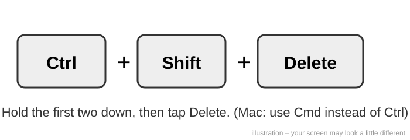
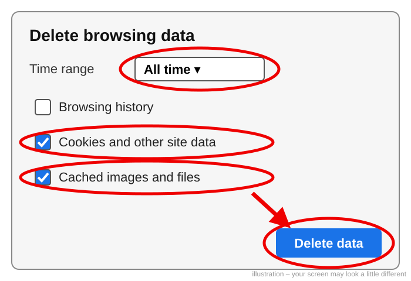
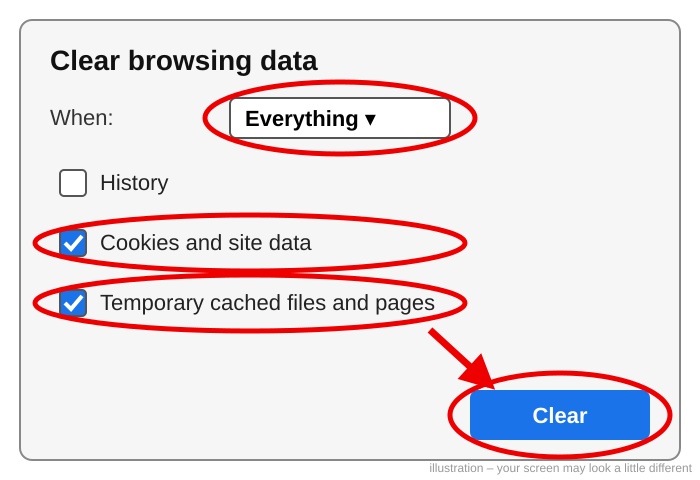
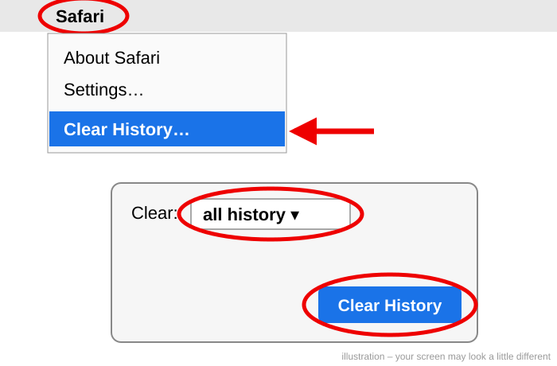
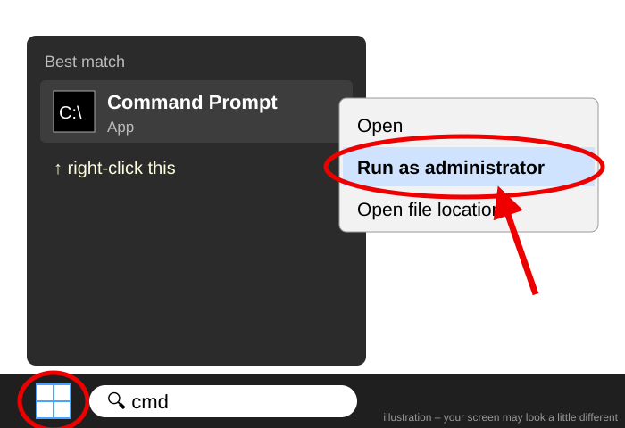
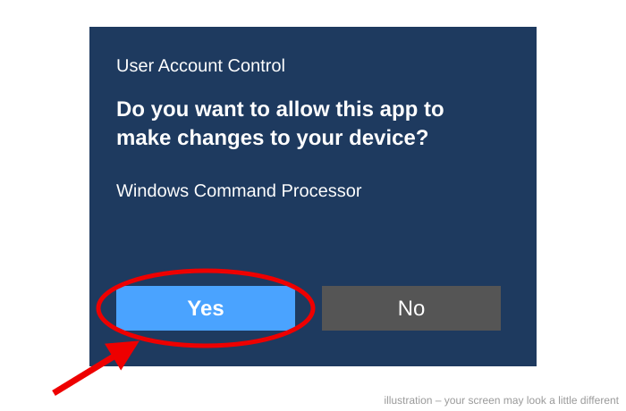
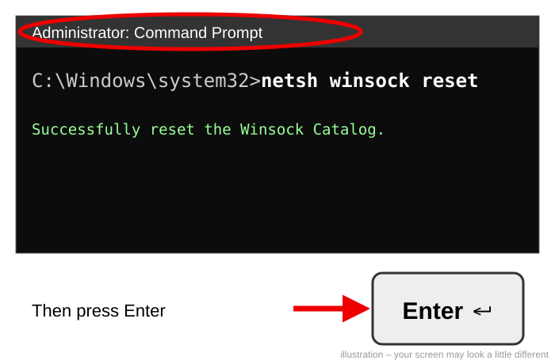
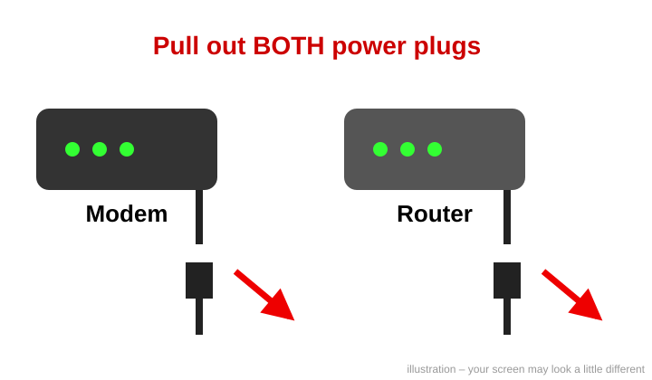
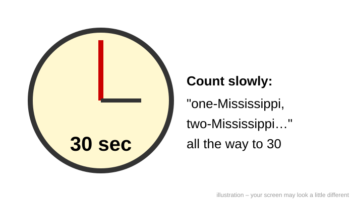
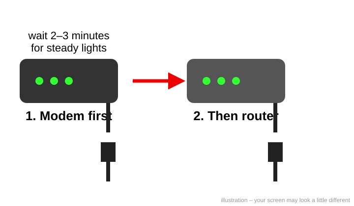

Still having trouble with MyLeague/DiamondSpaders? Step-by-Step Fix
😊 First, try the easy thing. MyLeague had server trouble and emergency maintenance on Oct 21. Sometimes it just needs time. Wait a few minutes, then reload the page (press F5, or Cmd+R on a Mac). If friends in the league are playing but you still can't get in, follow the steps below, one at a time. After each step, try MyLeague again — you may not need them all!
Step 1 — Clear your browser's old saved data
Your browser may be holding on to an old "ticket" from before the repair. We'll throw it away.
- Close MyLeague and close your browser completely, then open it again (don't open MyLeague yet).
- Press these 3 keys together: Ctrl+Shift+Delete (on a Mac with Chrome or Firefox: Cmd+Shift+Delete). A box will pop up.

Now follow the part for your browser:
Google Chrome
- Next to Time range, choose All time.
- Put a check in Cookies and other site data and Cached images and files.
- Click Delete data.

Microsoft Edge
- Next to Time range, choose All time.
- Check Cookies and other site data and Cached images and files.
- Click Clear now.
Firefox
- Next to When, choose Everything.
- Check Cookies and site data and Temporary cached files and pages.
- Click Clear.

Safari (Mac)
- Click the word Safari at the very top-left of the screen.
- Click Clear History…
- Next to Clear, choose all history, then click Clear History. (This also clears cookies and saved files.)

Close the browser, open it again, and try MyLeague. You'll need to log in again — that's normal.
🍎 Mac users: Steps 2 and 3 are only for Windows PCs. Instead, just restart your Mac: click the Apple at top-left, click Restart…, then Restart. Then skip to Step 4 if you still can't get in.
Step 2 — Clear your computer's "address book" (Windows PCs)
- Click the Start button (the Windows symbol, bottom of the screen).
- Type cmd. "Command Prompt" will appear at the top.
- Right-click Command Prompt, then click Run as administrator.

- A box asks "Do you want to allow this app to make changes to your device?" Click Yes.

- A black window opens. Type this exactly (or click Copy, then right-click inside the black window to paste):
ipconfig /flushdns- Press Enter. You'll see "Successfully flushed the DNS Resolver Cache." Leave the black window open.
Step 3 — Reset your internet settings (Windows PCs)
- In the same black window, type this exactly (or use Copy):
netsh winsock reset- Press Enter. You'll see "Successfully reset the Winsock Catalog."
- Restart your computer: Start → Power → Restart.

Step 4 — Restart your modem and router
The modem is the box your internet cable comes into; the router makes your Wi-Fi. (Some homes have one box that does both — that's fine.)
- Unplug the power cord from the back of the modem and the router.

- Wait 30 seconds. Count slowly to 30.

- Plug the modem back in first. Wait 2–3 minutes until its lights stop blinking and stay steady.
- Then plug the router back in and wait another 2 minutes.
- Open your browser and try MyLeague again.

💬 Still stuck? Don't worry — post on the message board on the Diamond Spaders main page and someone will help you.